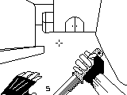

Apresentação da disciplina de linguagem de programação 💻
🤔 Quem sou eu?
Experiência profissional

👋 Apresentação dos alunos
Para que possamos nos conhecer melhor, por favor, compartilhe um pouco sobre você:
- Nome:
- Cidade:
- Trabalha na área de TI? (Sim/Não. Se sim, qual função?)
- Qual seu principal objetivo para este ano?
- Já se identifica com alguma área específica da TI? (Ex: Desenvolvimento Web, Mobile, Banco de Dados, Redes, Segurança, IA, etc.)
🎓 Plano de curso
Instituição: Fundação
Objetivo geral
A disciplina visa:
- Aprofundar nos conceitos de Orientação a Objetos utilizando C/C++.
- Aplicar conhecimentos de Programação WEB.
- Utilizar frameworks para o desenvolvimento de soluções WEB.
- Desenvolver uma visão sistêmica da comunicação entre diferentes soluções de software.
📚 Conteúdo programático
O curso será dividido nos seguintes módulos principais:
1. Conceitos de Linguagem C++ e Programação Orientada a Objetos (POO)
- 1.1. Revisão dos comandos básicos de C++
- 1.2. Programação Orientada a Objetos com C++:
- 1.2.1. Classes
- 1.2.2. Objetos
- 1.2.3. Construtores
- 1.2.4. Métodos de Acesso (Getters)
- 1.2.5. Métodos Modificadores (Setters)
- 1.2.6. Objetos Constantes
- 1.2.7. Herança
- 1.2.8. Polimorfismo
- 1.2.9. Agregação
- 1.2.10. Composição
- 1.2.11. Interfaces (Classes Abstratas Puras)
- 1.3. Desenvolvimento de Aplicações usando conceitos de POO em C++
2. Programação WEB
- 2.1. Conceitos de Programação WEB
- 2.2. Criação de Formulários WEB
- 2.3. Acesso a Banco de Dados
- 2.4. Manipulação de Controles e Eventos
- 2.5. Manutenção de Estados (variáveis de sessão, cookies, etc.)
- 2.6. Troca de Valores entre páginas (ex: PostBack, QueryString)
- 2.7. Criação de Menus de navegação
- 2.8. Criação e aplicação de Estilos (CSS)
- 2.9. Controle de Acesso (LOGIN e autenticação)
- 2.10. Desenvolvimento de Aplicações WEB aplicando conceitos de POO
3. Frameworks de Desenvolvimento
- 3.1. Conceitos de Frameworks
- 3.2. Conceitos de Arquiteturas de software (Monolítica, Microserviços, etc.)
- 3.3. Conceitos de Programação em Camadas (N-Tier Architecture)
- 3.4. Framework de Arquitetura MVC (Model-View-Controller)
- 3.5. Conceitos de Persistência de Dados
- 3.6. Framework ORM (Object-Relational Mapping)
- 3.7. Conceitos de Rotas em aplicações web
- 3.8. Conceitos de Autenticação e Autorização em frameworks
- 3.9. Conceitos de Linguagem Estruturada de Consulta (SQL) e sua integração
- 3.10. Desenvolvimento de Aplicações usando Frameworks
4. Desenvolvimento de Aplicações Single Page Application (SPA)
- 4.1. Conceitos de Aplicações SPA
- 4.2. Conceitos de Arquitetura MVVM (Model-View-ViewModel) e outras arquiteturas SPA
- 4.3. Conceitos de Aplicações Bloqueantes e Não Bloqueantes (Asynchronous Operations)
- 4.4. Conceitos de Desenvolvimento de Componentes reutilizáveis
- 4.5. Conceitos de Serviços WEB (Web Services)
- 4.6. Conceitos de Serviços REST (Representational State Transfer)
- 4.7. Implementação de Serviços REST (APIs)
- 4.8. Implementação de aplicações SPA consumindo serviços REST
- 4.9. Desenvolvimento de aplicações SPA completas
🛠️ Linguagens e ferramentas
Durante o curso, exploraremos e utilizaremos as seguintes tecnologias:
- C++
- Java
- Python
- JavaScript
- (Outras ferramentas e IDEs específicas serão usadas conforme necessário)
📝 Atividades
As atividades da disciplina incluirão:
- Resolução de exercícios práticos.
- Elaboração de novos exercícios e desafios.
- Pesquisas individuais e em grupo, abordando aspectos teóricos do conteúdo programático.
- Apresentação de seminários sobre temas relevantes.
- Desenvolvimento de trabalhos práticos, individualmente ou em grupos.
- Elaboração de programas e pequenas aplicações.
💯 Avaliação
O desempenho dos alunos será avaliado por meio de:
- Provas escritas ou práticas: Avaliações formais sobre o conteúdo ministrado.
- Trabalhos e/ou seminários: Avaliação contínua do aprendizado através de projetos, apresentações e participação.
📖 Bibliografia básica
- GREENE, Jennifer. Use A Cabeça! C#. Rio de Janeiro: Alta Books, 2011. (Embora o foco seja C++, este livro pode oferecer insights sobre POO de forma didática)
- SAVITCH, Walter J. C++ Absoluto. São Paulo: Addison Wesley, 2004.
- MATOS, Ecivaldo; ZABOT, Diego. Aplicativos com Bootstrap e Angular : como desenvolver apps responsivos. São Paulo: Érica, 2020.
- MILETTO, Evandro Manara, BERTAGNOLLI, Silvia Castro. Desenvolvimento de Software II. Porto Alegre : Bookman, 2014.
(Bibliografia complementar poderá ser indicada durante o curso.)